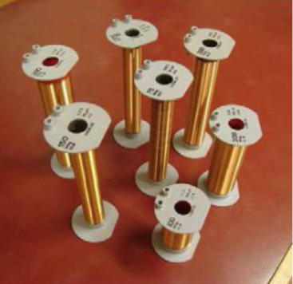

Circuit Building
As part of the course Electrical Fields and Circuits, we were paired up and built a series of circuits.

 During second semester of first year, I participated in various hands-on labs that enhanced my practical understanding of electrical and computer engineering principles. We tested and calculated currents, voltages, and resistances, becoming familiar with DMM machines and proto-boards. Through these experiences, I developed strong technical skills in using lab equipment and software tools, reinforced my theoretical knowledge, and gained valuable problem-solving abilities. Displayed are images of our labs and the circuits we built.
 During second year, I learned to analyze linear electrical circuits using Kirchhoff’s laws, Thevenin/Norton equivalents,
and AC steady-state analysis. The course introduced tools like phasors, frequency response, and complex impedance, which are essential for
understanding filters and power systems. Labs with LTSpice simulations and hands-on circuit building helped reinforce
the
theory and improve my debugging skills. I also took ECE231 which introduced key electronic components like diodes, BJTs, and
MOSFETs, focusing on their operation and use in
amplifier circuits. I learned about DC biasing, small-signal models, and the design of common-emitter/source amplifiers.
The course emphasized real-world behavior, and labs helped me understand how analog systems handle trade-offs like gain,
bandwidth, and distortion.
During second year, I learned to analyze linear electrical circuits using Kirchhoff’s laws, Thevenin/Norton equivalents,
and AC steady-state analysis. The course introduced tools like phasors, frequency response, and complex impedance, which are essential for
understanding filters and power systems. Labs with LTSpice simulations and hands-on circuit building helped reinforce
the
theory and improve my debugging skills. I also took ECE231 which introduced key electronic components like diodes, BJTs, and
MOSFETs, focusing on their operation and use in
amplifier circuits. I learned about DC biasing, small-signal models, and the design of common-emitter/source amplifiers.
The course emphasized real-world behavior, and labs helped me understand how analog systems handle trade-offs like gain,
bandwidth, and distortion.